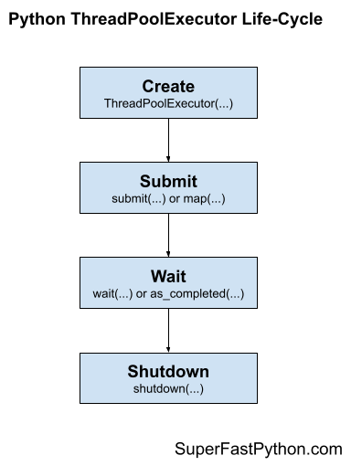

ThreadPoolExecutor in Python: Quick-Start Guide
The ThreadPoolExecutor is a flexible and powerful thread pool for executing add hoc tasks in an asynchronous manner.
In this tutorial, you will discover how to get started using the ThreadPoolExecutor quickly in Python.
Let's jump in.
ThreadPoolExecutor in Python
The ThreadPoolExecutor provides a pool of generic worker threads.
It was designed to be easy and straightforward to use.
If multithreading is like the transmission for changing gears in a car, then threading.Thread is a manual transmission (e.g. hard to learn and and use) whereas concurrent.futures.ThreadPoolExecutor is an automatic transmission (e.g. easy to learn and use).
- threading.Thread: Manual threading in Python.
- concurrent.futures.ThreadPoolExecutor: Automatic or "just work" mode for threading in Python.
ThreadPoolExecutor Life-Cycle
There are four main steps in the lifecycle of using the ThreadPoolExecutor class; they are: create, submit, wait, and shut down.
- 1. Create: Create the thread pool by calling the constructor
ThreadPoolExecutor(). - 2. Submit: Submit tasks and get futures.
- 2a. Submit tasks with
map() - 2b. Submit tasks with
submit()
- 2a. Submit tasks with
- 3. Wait: Wait and get results as tasks complete (optional).
- 3a. Wait for results to complete with
wait() - 3b. Wait for results with
as_completed()
- 3a. Wait for results to complete with
- 4. Shutdown: Shut down the thread pool.
- 4a. Shutdown manually by calling
shutdown()
- 4b. Shutdown automatically with the context manager.
- 4a. Shutdown manually by calling
The following figure helps to picture the lifecycle of the ThreadPoolExecutor class.

Let's take a closer look at each lifecycle step in turn.
Step 1: Create the Thread Pool
First, a ThreadPoolExecutor instance must be created.
When an instance of a ThreadPoolExecutor is created, it must be configured with the fixed number of threads in the pool, a prefix used when naming each thread in the pool, and the name of a function to call when initializing each thread along with any arguments for the function.
The pool is created with one thread for each CPU in your system plus four. This is good for most purposes.
- Default Total Threads = (Total CPUs) + 4
For example, if you have 4 CPUs, each with hyperthreading (most modern CPUs have this), then Python will see 8 CPUs. Adding four to this means that the default number of threads will be (8 + 4) or 12 threads to the pool by default.
...
# create a thread pool with the default number of worker threads
executor = ThreadPoolExecutor()
It is a good idea to test your application in order to determine the number of threads that results in the best performance, anywhere from a few threads to hundreds of threads.
It is typically not a good idea to have thousands of threads as it may start to impact the amount of available RAM and result in a large amount of switching between threads, which may result in worse performance.
We’ll discuss tuning the number of threads for your pool more later on.
You can specify the number of threads to create in the pool via the max_workers argument; for example:
...
# create a thread pool with 10 worker threads
executor = ThreadPoolExecutor(max_workers=10)
You can also specify the number of threads in the pool without naming the argument, for example:
...
# create a thread pool with 10 worker threads
executor = ThreadPoolExecutor(10)
Step 2: Submit Tasks to the Thread Pool
Once the thread pool has been created, you can submit tasks for asynchronous execution.
As discussed, there are two main approaches for submitting tasks defined on the Executor parent class. They are: map() and submit().
Submit Tasks With map()
The map() function is an asynchronous version of the built-in map() function for applying a function to each element in an iterable, like a list.
You can call the map() function on the pool and pass it the name of your function and the iterable.
You are most likely to use map() when converting a for loop to run using one thread per loop iteration.
The usage of map() assumes that your target task function takes exactly one argument, which is one item from your iterable.
- More than one argument: If you require more than one argument, you can bundle your arguments into a structure like a list, tuple, or dict and update your function to take this structure, or you can use
submit()instead. - No arguments: If your target function does not take any arguments, you cannot use
map()and instead you should usesubmit().
...
# perform all tasks in parallel
results = executor.map(task, items) # does not block
Where task is your function that you wish to execute and items is your iterable of objects, each to be executed by your task function.
The tasks will be queued up in the thread pool and executed by worker threads in the pool as they become available.
The map() function will return an iterable immediately. This iterable can be used to access the results from the target task function as they are available in the order that the tasks were submitted (e.g. order of the iterable you provided).
...
# iterate over results as they become available
for result in executor.map(task, items):
print(result)
You can also set a timeout when calling map() via the timeout argument in seconds if you wish to impose a limit on how long you're willing to wait for each task to complete as you're iterating, after which a TimeoutError will be raised.
...
# iterate over results as they become available
for result in executor.map(task, items, timeout=5):
# wait for task to complete or timeout expires
print(result)
Submit Tasks With submit()
The submit() function submits one task to the thread pool for execution.
The function takes the name of the function to call and all arguments to the function, then returns a Future object immediately.
The Future object is a promise to return the results from the task (if any) and provides a way to determine if a specific task has been completed or not.
...
# submit a task with arguments and get a future object
future = executor.submit(task, arg1, arg2) # does not block
Where task is the function you wish to execute and arg1 and arg2 are the first and second arguments to pass to the task function.
You can use the submit() function to submit tasks that do not take any arguments; for example:
...
# submit a task with no arguments and get a future object
future = executor.submit(task) # does not block
You can access the result of the task via the result() function on the returned Future object. This call will block until the task is completed.
...
# get the result from a future
result = future.result() # blocks
You can also set a timeout when calling result() via the timeout argument in seconds if you wish to impose a limit on how long you're willing to wait for each task to complete, after which a TimeoutError error will be raised.
...
# wait for task to complete or timeout expires
result = future.result(timeout=5) # blocks
Step 3: Wait for Tasks to Complete (Optional)
The concurrent.futures module provides two module utility functions for waiting for tasks via their Future objects.
Recall that Future objects are only created when we call submit() to push tasks into the thread pool.
These wait functions are optional to use, as you can wait for results directly after calling map() or submit() or wait for all tasks in the thread pool to finish.
These two module functions are wait() for waiting for Future objects to complete and as_completed() for getting Future objects as their tasks complete.
wait(): Wait on one or moreFutureobjects until they are completed.as_completed(): ReturnsFutureobjects from a collection as they complete their execution.
You can use both functions with Future objects created by one or more thread pools; they are not specific to any given thread pool in your application. This is helpful if you want to perform waiting operations across multiple thread pools that are executing different types of tasks.
Both functions are useful to use with an idiom of dispatching multiple tasks into the thread pool via submit in a list comprehension; for example:
...
# dispatch tasks into the thread pool and create a list of futures
futures = [executor.submit(task, item) for item in items]
Here, task is our custom target task function; item is one element of data passed as an argument to task, and items is our source of item objects.
We can then pass the futures to wait() or as_completed().
Creating a list of futures in this way is not required, just a common pattern when converting for loops into tasks submitted to a thread pool.
Wait for Futures to Complete with wait()
The wait() function can take one or more futures and will return when a specified action occurs, such as all tasks completing, one task completing, or one task throwing an exception.
The function will return one set of future objects that match the condition set via the return_when. The second set will contain all of the futures for tasks that did not meet the condition. These are called the done and the not_done sets of futures.
It is useful for waiting on a large batch of work and to stop waiting when we get the first result.
This can be achieved via the FIRST_COMPLETED constant passed to the return_when argument.
...
# wait until we get the first result
done, not_done = wait(futures, return_when=concurrent.futures.FIRST_COMPLETED)
Alternatively, we can wait for all tasks to complete via the ALL_COMPLETED constant.
This can be helpful if you are using submit() to dispatch tasks and are looking for an easy way to wait for all work to be completed.
...
# wait for all tasks to complete
done, not_done = wait(futures, return_when=concurrent.futures.ALL_COMPLETED)
There is also an option to wait for the first task to raise an exception via the FIRST_EXCEPTION constant.
...
# wait for the first exception
done, not_done = wait(futures, return_when=concurrent.futures.FIRST_EXCEPTION)
Wait for Futures with as_completed()
The beauty of performing tasks concurrently is that we can get results as they become available, rather than waiting for all tasks to be completed.
The as_completed() function will return future objects for tasks as they are completed in the thread pool.
We can call the function and provide it a list of future objects created by calling submit() and it will return future objects as they are completed in whatever order.
It is common to use the as_completed() function in a loop over the list of futures created when calling submit(); for example:
...
# iterate over all submitted tasks and get results as they are available
for future in as_completed(futures):
# get the result for the next completed task
result = future.result() # blocks
Note: this is different to iterating over the results from calling map() in two ways. Firstly, map() returns an iterator over objects, not over futures. Secondly, map() returns results in the order that the tasks were submitted, not in the order that they are completed.
Step 4: Shut Down the Thread Pool
Once all tasks are completed, we can close down the thread pool, which will release each thread and any resources it may hold (e.g. the thread stack space).
The thread pool can be shut down manually or automatically.
Shut Down Manually With shutdown()
You can shut down the thread pool manually by calling the shutdown() function.
...
# shutdown the thread pool
executor.shutdown() # blocks
The shutdown() function will wait for all tasks in the thread pool to complete before returning by default.
This behavior can be changed by setting the wait argument to False when calling shutdown(), in which case the function will return immediately. The resources used by the thread pool will not be released until all current and queued tasks are completed.
...
# shutdown the thread pool
executor.shutdown(wait=False) # does not blocks
We can also instruct the pool to cancel all queued tasks to prevent their execution. This can be achieved by setting the cancel_futures argument to True. By default, queued tasks are not cancelled when calling shutdown().
...
# cancel all queued tasks
executor.shutdown(cancel_futures=True) # blocks
If we forget to close the thread pool, the thread pool will be closed automatically when we exit the main thread. If we forget to close the pool and there are still tasks executing, the main thread will not exit until all tasks in the pool and all queued tasks have executed.
Shut Down Automatically With the Context Manager
A preferred way to work with the ThreadPoolExecutor class is to use a context manager.
This matches the preferred way to work with other resources, such as files and sockets.
Using the ThreadPoolExecutor with a context manager involves using the with keyword to create a block in which you can use the thread pool to execute tasks and get results.
Once the block has completed, the thread pool is automatically shut down. Internally, the context manager will call the shutdown() function with the default arguments, waiting for all queued and executing tasks to complete before returning and carrying on.
Below is a code snippet to demonstrate creating a thread pool using the context manager.
...
# create a thread pool
with ThreadPoolExecutor(max_workers=10) as executor:
# submit tasks and get results
# ...
# automatically shutdown the thread pool...
# the pool is shutdown at this point
This is a very handy idiom if you are converting a for loop to be multithreaded.
It is less useful if you want the thread pool to operate in the background while you perform other work in the main thread of your program, or if you wish to reuse the thread pool multiple times throughout your program.
Takeaways
You now know how to get started with the ThreadPoolExecutor in Python.